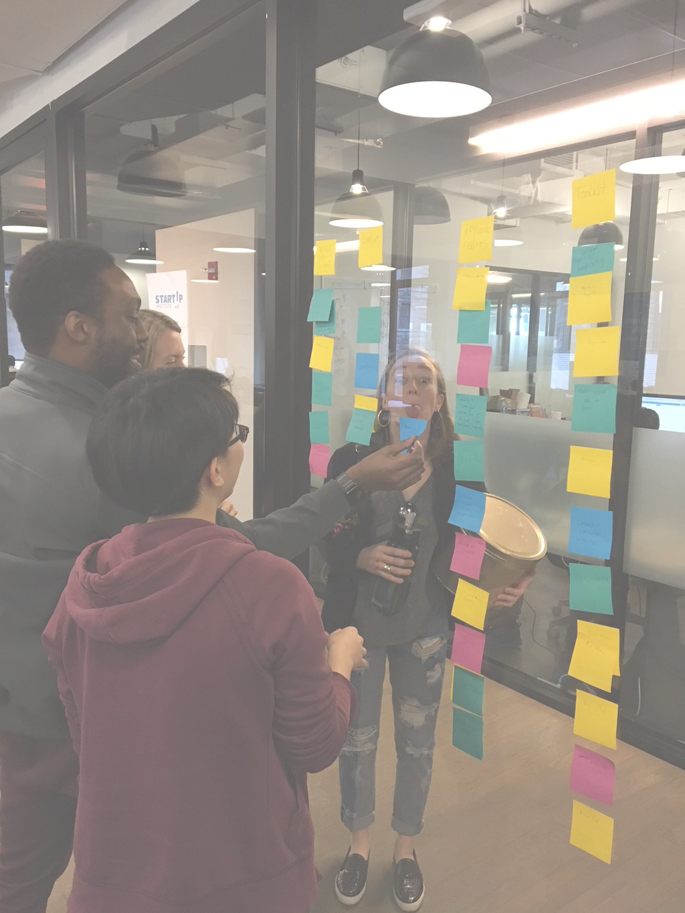
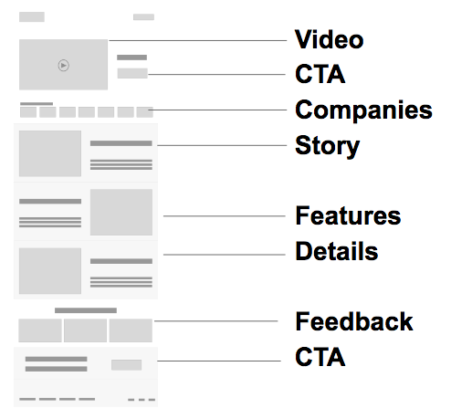

-
Time Frame
- March - April 2016
- Warren Longmire (Dev)
- Walter Bermudez(Dev)
- Jessica Cary (Sales)
- Olivia Gericke (UI/UX Design)
- and Soo!
- Usability Testing
- Affinity Mapping
- Mind-mapping & User-journey
- Competitive Landscape
- Wireframing
- Low to High-Fidelity Mockups
- Pen, paper, post-its
- myBalsamiq
- Sketch
- Invision
- Powerpoint
- 1. Identifying ideal user base
- 2. An interactive prototype for website
Team
Methods
Tools
Project Goals
Wrkbench
Wrkbench.io is a visual collaboration tool designed for professionals that allow people in real-time to create, play, and share their work in a virtual space.
At Wrkbench, I worked with my Startup Institute team to capture marketable opportunities and industry-driven feature concepts for the startup's upcoming enterprise app, Wrkbench Pro. As well as an interactive wireframe of the Wrkbench Pro website. We employed lean UX principles and methodologies such as user testing, affinity mapping and wireframing to deliver our weekly presentations to the founder and CTO.
-
todayTime frame
March - April 2016
group_workTeamassignmentMethodsUsability Testing, Affinity Mapping, Mind-mapping & User-journey, Personas, Competitive Landscape, Wireframing, Low to High-Fidelity Mockups
dashboardToolsmyBalsamiq, Sketch, Invision, Powerpoint, pen, paper, & post-its
whatshotProject GoalsIdentify the ideal user base and design an interactive website prototype for a future enterprise app
Usability Testing:
We interviewed colleagues, friends & family using the current iOs Wrkbench Lite app as a prototype, and a survey that we designed together. We wanted to probe behaviors of professionals who collaborate at work, their motivations to communicate visually and how Wrkbench Lite provides a meta-solution as a visual collaboration tool.
Personas & Features:
-

Affinity Mapping
-

Brain-dumping
-

Mind-mapping
-

Personas
As a cross-functional team with different disciplines in programming, sales and design, we needed a highly collaborative approach to build the personas. We started with mind-mapping to declare all our assumptions with the phrase "I am X, and I use Wrkbench to do X" as the hypothesis statement.
This brainstorming exercise quickly defined the professional roles that we could hone in on for the personas, as well as capture the industry-driven features that the founder wanted addressed. The features were further explored with an affinity-mapping exercise where we imagined opportunities in areas of a toolkit, templates, image/video editor and general app-wide features.
Wrkbench Pro website:
I collaborated with Olivia, a UI/UX designer, to deliver low to high-fidelity wireframes and finally an interactive prototype on InVision of the enterprise focused website (preview on top). We first started researching work-related productivity software to reference the websites of the most successful apps for comparative analysis. We uncovered the information hierarchy of SaaS-minded customers such as a product-centered introduction, privacy concerns, brand testimonials, illustrated features, and more.
We efficiently organized the information architecture with low-fidelity wireframes, providing opportunities for change per the stakeholder's feedback that lead to our final mockup.
Key Findings:
In our final presentation, we contributed solution proposals to the founder and CTO highlighting key areas of opportunity in tech, sales, marketing and design that we found from this experience. One of the main proposals we shared was to have beta customers sign-up for the software. Across all disciplines we found that the most valuable insights came from the first user research we conducted. In order to progressively grasp the ideal user base, the beta customers can offer direct actionable feedback that could fine-tune the software before its launch and inspire/validate the development of future features.